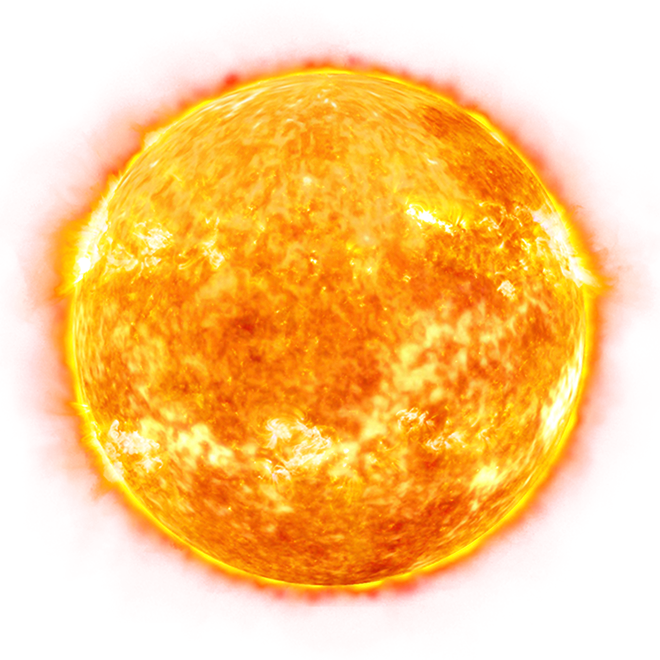

The Sun is the star at the center of the Solar System. It is a massive, hot ball of plasma, inflated and heated by energy produced by nuclear fusion reactions at its core. Part of this energy is emitted from its surface as light, ultraviolet, and infrared radiation, providing most of the energy for life on Earth. The Sun has been an object of veneration in many cultures. It has been a central subject for astronomical research since ancient times.